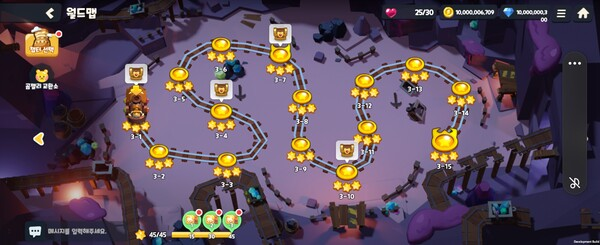

리뷰
뉴스
게임캘린더
커뮤니티
obius
데브시스터즈 '쿠키런: 모험의 탑(이하 모험의 탑)'은 꽤 익숙한 맛이 난다. 기존 수집형 ARPG에 캐주얼 특성을 세 스푼 정도 첨가했다. 전투가 크게 어렵지 않고 패턴도 단순한 편이지만, 콘텐츠 호흡이 짧아 가볍게 즐기기 좋은 구성이다. 파고들기 요소에는 어떤 것들이 있을지 알 순 없지만, 짧은 콘텐츠 호흡과 단순한 콘텐츠 구성을 봤을 때 지향하는 바가 무엇인지는 쉽게 파악된다. 스낵컬처가 각광받는 트렌드를 저격한 컨셉트로 해석된다.
스테이지는 스타트 지점에서 골인 지점까지 캐릭터를 조작해가며 파훼하는 구조다. 중간중간 다양한 기믹이 있다. 시연 빌드에서는 '슈퍼마리오 브라더스'의 물살처럼 강한 바람이 불어 캐릭터가 날라가는 기믹이 있다.
스테이지 구성이라면 빠질 수 없는 '3별' 시스템도 존재한다. 완료 시 특정 조건 3개를 충족하면 추가 보상을 얻는다.
스테이지 구성이라면 빠질 수 없는 '3별' 시스템도 존재한다. 완료 시 특정 조건 3개를 충족하면 추가 보상을 얻는다.
간단하지만 오밀조밀한 조작감과 짧은 콘텐츠 호흡이 특징인 캐주얼 게임
서브컬처 게임 문법 고수한 '스토리 모드’

맵 중간중간 숨겨진 보물상자나 박스가 있다. 어
드벤처 재미를 경험할 수 있는 장치다.캐릭터(쿠키)는 기존 수집형 ARPG와 비슷하다. 쿨타임이 없는 '일반 공격', 짧은 쿨타임이 있는 '특수 공격', 그리고 강력하지만 쿨이 긴 '필살기' 세 가지로 나뉜다. 액션 게임이라면 빠질 수 없는 대쉬(회피)가 있다.
대쉬에는 쿨타임이 존재한다. 스태미나를 쓰거나 쿨이 없는 게임과는 사뭇 다르다. 스테이지 및 보스 패턴 때문이 아닐까 싶다. 모험의 탑 시연 빌드 기믹 대부분이 AoE, 소위 장판기가 많은데 대쉬에 쿨타임을 걸어 일종의 제약을 부여했다고 풀이된다.
패턴 난도가 높은 편이 아니기에 대쉬에 쿨타임까지 없다면 게임이 너무 쉬웠을 것이다. 어렵지는 않지만 마구잡이로 사용은 하지 못하도록 만들면서 최소한의 플레이 리스크를 마련한 셈이다.